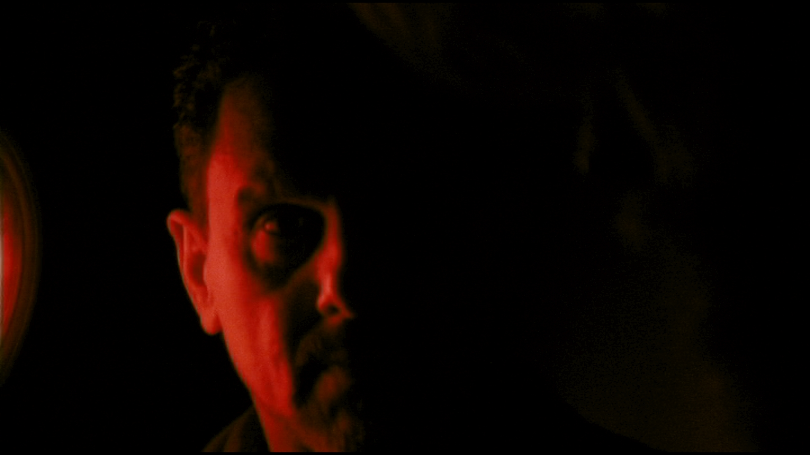
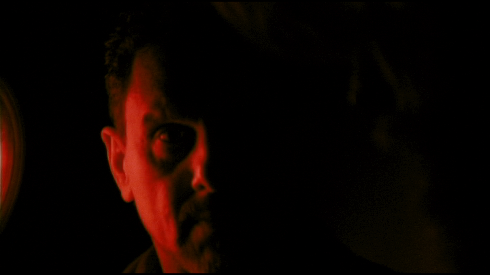

In STRAW RAFTS, New York City recluse Francis Walsh is visited by social worker Abe Aarons in an attempt to save him from an impeding eviction. When it becomes revealed that Francis is about to hold a ritual seance to speak to his deceased mother, Abe forces Francis to let him take part. As they progress through the different stages of the ritual, the two men help to process each other's inner turmoil and find an unexpected, shared salvation.
MIGUEL Luis Olmeda
ABE Ryan Guess
FRANCIS John Lichtwalt
Written and Directed by Evan Shaw
Director of Photography Eli Black
Edited by Evan Shaw and Eli Black
Story Editor Ryan Guess
Sound by Peter Trepke
Color by Jeff Sousa